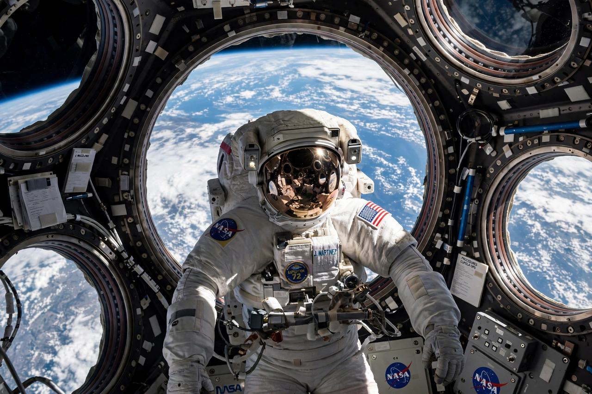

Scott Kelly (astronaut)
From Wikipedia, the free encyclopedia
| Scott Kelly (astronaut) | |
|---|---|
| Born | 21 February 1964, Orange, New Jersey |
| Occupation | Astronaut, Navy captain |
| Known for | Year-long ISS mission (2015–16) and twin study with Mark Kelly |

Kelly during the year in space.Scott Joseph Kelly (born 1964) is an American retired astronaut and naval aviator who spent 340 consecutive days aboard the International Space Station in 2015–16 — the longest single American spaceflight at the time — as part of a one-year mission studying the effects of long-duration flight before Mars journeys.
Kelly's mission became a controlled experiment because he has an identical twin: his brother Mark Kelly, also an astronaut (later a US Senator), remained on Earth as the genetic control. NASA's Twins Study compared the brothers across the year, finding gene-expression shifts, telomere lengthening (and rapid re-shortening), immune and cognitive changes, and a slight thickening of Scott's retinal nerves — a rich dataset for Mars planning.
Career
Across four flights Kelly logged 520 days in space, commanding the ISS three times. His memoir Endurance (2017) is a candid account of the year mission. The American endurance record he set was later surpassed by Mark Vande Hei (355 days) and Frank Rubio (371 days); his twin-study legacy remains the one-year mission's scientific monument.
See also
International Space Station · Peggy Whitson · Valeri Polyakov · Space Shuttle